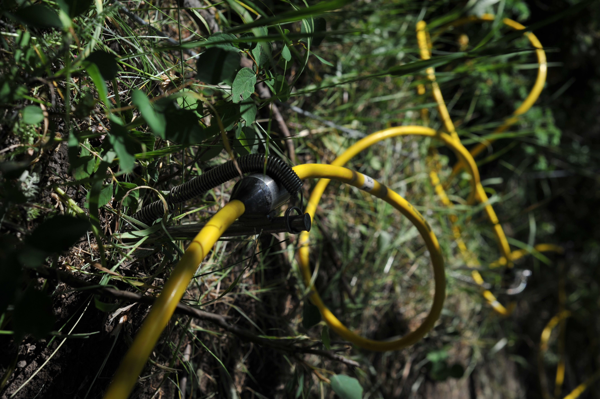

My Ph.D. at the University of Wyoming through the Wyoming Center for Environmental Hydrology and Geophysics (WyCHEG) afforded me a unique opportunity to mix hydrological, geophysical, and ecophysiological approaches to track water movement. Our extensive interdisciplinary team aimed to close the water budget using interpolations of snow distributions, measures of whole-tree and understory evapotranspiration, and a unique implementation of near-surface geophysical observations illuminating the subsurface hydrological fluxes. Electrical resistivity imaging (ERI) techniques have produced continuous observations of subsurface processes for parsing subsurface flows, vertical infiltration, and water uptake within the rooting zones. However, I believe this is just the forefront of using near-surface geophysical tools for exploring the rhizosphere and rooting-zone hydraulic mechanisms controlling carbon and water fluxes.
The world of plant water relations is theoretically rich with biophysical processes but often lacks empirical observations needed to test these mechanisms. A substantial gap emerges from the temporal and spatial mismatch in data collection of water potentials. Namely, leaf water potentials are typically measured once or twice a day (e.g., predawn and midday), at weekly to monthly sampling intervals, and on individuals distributed across the landscape. Soil water potential is rarely measured in situ; instead, estimates are predicted by models parameterized with soil volumetric water content and soil characteristics. Soil water contents are often recorded every 5 to 30 minutes, but only from a limited number of landscape positions. In sum, plant water potentials are mostly discrete in time but replicated spatially, while soil water potentials are mostly discrete in space but temporally continuous.

Electrical resistivity imaging (ERI) is a promising approach to fill gaps in the spatial-temporal mismatch for soil water potential measurements. Specifically, this technique expands spatial representation by covering more rooting and soil area while maintaining high temporal resolution. Repeated pulses of electrical current provide a time series of 2-D maps, capturing the subtle variations in soil, bedrock, and water content. Soil moisture can be confidently estimated as a function of electrical conductance.
Our work in Panama was successful in differentiating the soil-surface evaporation and the depletion of soil moisture within the root zone. However, while ERI is typically used to monitor volumetric changes in soil water, it is rarely used to estimate the spatial-temporal dynamics of soil water potential. Since soil conductance and soil water potential are equally sensitive to changes in soil particle size, pH, salinity, cation exchange capacity, and porosity, ERI may be an even better proxy for soil water potential than water content.


With my newly funded USDA NIFA project, I am excited to explore the ability of the ERI techniques to characterize the rhizosphere and rooting zone soil water potentials. This project focuses on understanding the seasonal variation in rooting zone water potentials in hardwood forests of Indiana and Michigan, along with the evaluation of soil hydraulics differences among cover cropping strategies, both of which are important carbon sinks throughout the Midwest. We are hoping that these data will provide better constraints on the rooting processes that are doing to be essential for predicting future carbon sequestration and drought responses.